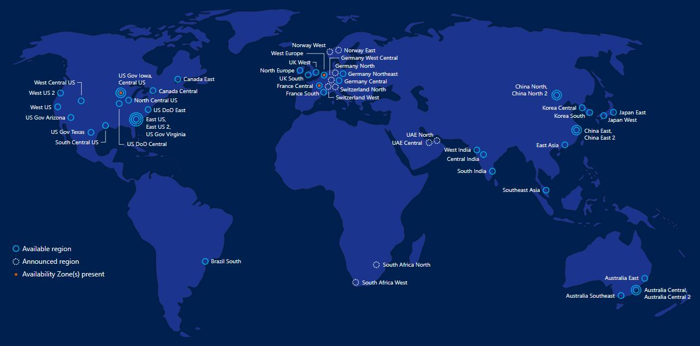

Microsoft Azure
Сильные стороны
Продукты Microsoft Azure
| Аналитика | Базы данных | ИИ + машинное обучение |
| Средства для разработчиков | Интеграция | |
| Интернет вещи | Мобильные приложения | Средства управления |
| Мультимедиа | Разработка и операции | Хранилище |
География Microsoft Azure
Платформа Azure располагает большим количеством регионов по всему миру. Это обеспечивает необходимый масштаб для размещения приложений ближе к пользователям в разных уголках мира и хранения данных в локальных расположениях, а также гарантирует максимальную устойчивость и соответствие требованиям.
Тенденции Microsoft Azure
Microsoft анонсировала новую пятилетнюю программу AI for Accessibility, в которую компания инвестирует 25 миллионов долларов США. Целью программы является использование ИИ на благо людей с ограниченными возможностями, которых в мире более одного миллиарда. Программа включает в себя гранты, инвестиции в технологии и экспертную поддержку, а также внедрение инноваций AI for Accessibility в облачные сервисы Microsoft. Основой проекта стала успешная инициатива AI for Earth (искусственный интеллект для Земли).
Используя возможности данных, машинного обучения и когнитивных сервисов, разработчики могут создавать и управлять решениями на основе ИИ.
Microsoft продемонстрировала интеллектуальные возможности смешанной реальности, которые способны распознавать и понимать окружающую людей обстановку, вещи, которые они используют, их действия и взаимоотношения